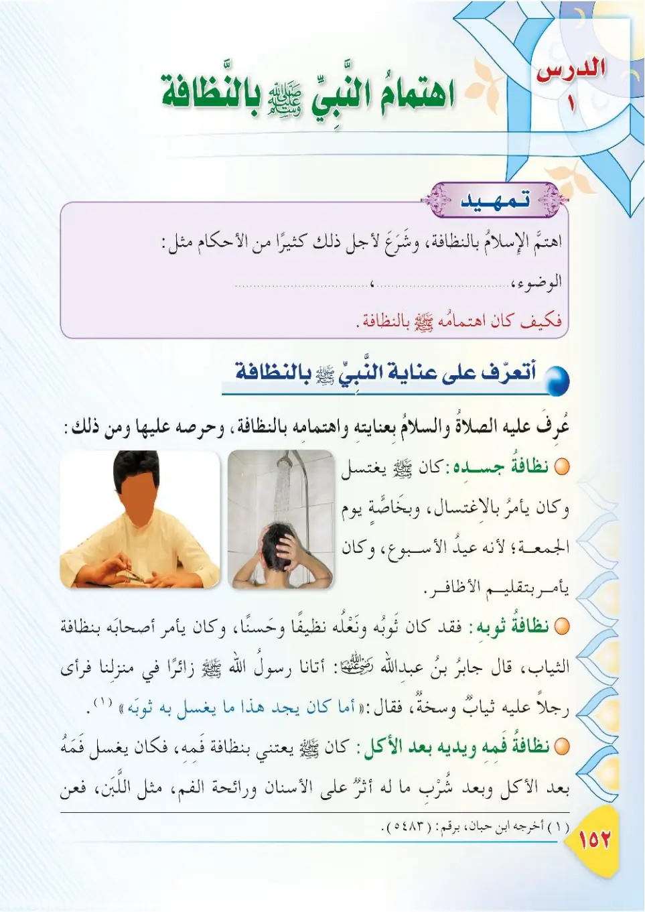
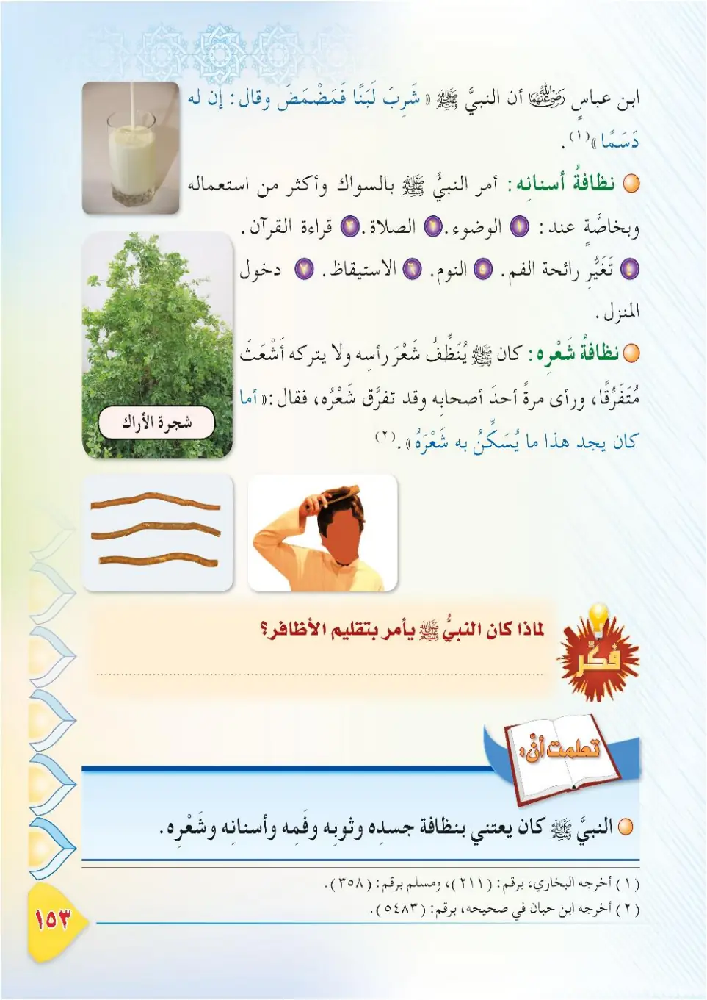
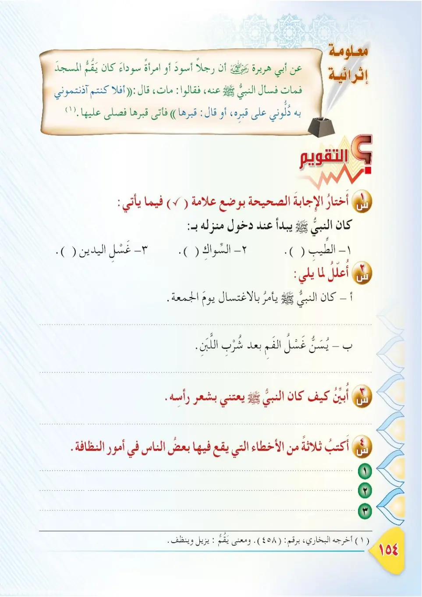

Stage 3·المرحلة الثالثة📖 Unit 4
اهْتِمَامُ النَّبِيِّ ﷺ بِالنَّظَافَةِ The Prophet's ﷺ Care for Cleanliness
From the Textbookpp. 153–155



الإسلامُ دينُ النظافةِ، والنبيُّ ﷺ قدوتُنا في كلِّ شيءٍ؛ فقد كان أحرصَ الناسِ على نظافةِ ثوبِه، وبدنِه، وفمِّه، وشعرِه. فلنتعرَّفْ — في هذا الدرسِ — على عنايةِ النبيِّ ﷺ بالنظافةِ.
Al-Islamu dinu an-nadafah, wa an-nabiyyu ﷺ qudwatumuna fi kulli shay'; faqad kana ahrasa an-nasi 'ala nadafati thawbih, wa badanih, wa fammih, wa sha'rih. Falnata'arraf — fi hadha ad-dars — 'ala 'inayati an-nabiyyi ﷺ bin-nadafah.
Islam is the religion of cleanliness, and the Prophet ﷺ is our example in everything; he was the most careful of people in keeping his clothes, body, mouth, and hair clean. In this lesson, let us learn about the Prophet's ﷺ care for cleanliness.
இஸ்லாம் தூய்மையின் மார்க்கம். அனைத்திலும் நபி ﷺ தான் நம் முன்மாதிரி. உடை, உடல், வாய், தலை முடியின் தூய்மையில் மக்களில் மிகக் கவனமுள்ளவராக அவர்கள் இருந்தார்கள். இந்தப் பாடத்தில் நபி ﷺ அவர்களின் தூய்மை அக்கறையை அறிவோம்.
من مظاهرِ اهتمامِ النبيِّ ﷺ بالنظافةِ: ١- العنايةُ بنظافةِ الثوبِ: كان النبيُّ ﷺ يحبُّ الثوبَ النظيفَ الأبيضَ، ويَكرَهُ أن ينامَ أحدٌ على ثوبٍ وسِخٍ.
Min mazahiri ihtimami an-nabiyyi ﷺ bin-nadafah: 1. al-'inayatu binadafati ath-thawb: kana an-nabiyyu ﷺ yuhibbu ath-thawba an-nadifa al-abyada, wa yakrahu an yanama ahadun 'ala thawbin wasikh.
Among the signs of the Prophet's ﷺ care for cleanliness:
1. Care for the cleanliness of clothing: the Prophet ﷺ loved the clean white garment and disliked that anyone should sleep on a dirty garment.
நபி ﷺ அவர்களின் தூய்மை அக்கறையின் அறிகுறிகள்:
1. உடையின் தூய்மை: வெள்ளை, சுத்தமான உடையை விரும்பினார்கள்; அழுக்கு உடையில் ஒருவர் தூங்குவதை வெறுத்தார்கள்.
٢- العنايةُ بنظافةِ الفمِّ: كان النبيُّ ﷺ يَسْتَنُّ بالسِّواكِ كثيرًا؛ قال ﷺ: «السِّواكُ مَطْهَرَةٌ للفَمِ، مَرْضَاةٌ للرَّبِّ».
2. al-'inayatu binadafati al-fam: kana an-nabiyyu ﷺ yastannu bis-siwaaki kathiran; qala ﷺ: «As-siwaaku mat-haratun lil-fam, mardatun lir-rabb».
2. Care for the cleanliness of the mouth: the Prophet ﷺ used the miswak (toothstick) frequently; he said: "The miswak purifies the mouth and is pleasing to the Lord."
2. வாயின் தூய்மை: நபி ﷺ அடிக்கடி மிஸ்வாக் பயன்படுத்தினார்கள். "மிஸ்வாக் வாயைத் தூய்மைப்படுத்துகிறது; இறைவனின் திருப்திக்கு காரணம்" என்று கூறினார்கள்.
٣- العنايةُ بنظافةِ الشعرِ وتطييبِ البدنِ: كان النبيُّ ﷺ يَعْتَنِي بشعرِه، ويتطَيَّبُ ويتسَرَّح (يُمَشِّطُ شعرَه). قال جابرٌ رضي الله عنه: سألني النبيُّ ﷺ عن المسكِ؛ فقال: «أعندَكَ شَيْءٌ من المِسْكِ؟».
3. al-'inayatu binadafati ash-sha'r wa tatyibi al-badan: kana an-nabiyyu ﷺ ya'tani bisha'rih, wa yatayyabu wa yatasarrahu. Qala Jabirun radiyallahu 'anhu: sa'alani an-nabiyyu ﷺ 'ani al-miski; faqala: «A'indaka shay'un min al-miski?».
3. Care for the cleanliness of the hair and perfuming the body: the Prophet ﷺ cared for his hair and used perfume and combed his hair. Jabir, may Allah be pleased with him, said: The Prophet ﷺ asked me about musk, saying: "Do you have any musk?"
3. முடியின் தூய்மையும் உடலை வாசனை செய்வதும்: நபி ﷺ தம் முடியைக் கவனித்து, நறுமணம் பூசி, தலை வாருவார்கள். ஜாபிர் (ரலி) கூறினார்: "உன்னிடம் கஸ்தூரி உள்ளதா?" என்று நபி ﷺ என்னிடம் கேட்டார்கள்.
ولماذا كان النبيُّ ﷺ يهتمُّ بالنظافةِ؟ لأنَّ النظافةَ من الإيمانِ، والمؤمنُ نظيفٌ يُحِبُّ النظافةَ، ويحافظُ على نظافةِ ثوبِه، وبدنِه، وفمِّه، وشعرِه.
Wa-limadha kana an-nabiyyu ﷺ yahtammu bin-nadafah? Li'anna an-nadafata mina al-iman, wa al-mu'minu nadifun yuhibbu an-nadafah, wa yuhafizu 'ala nadafati thawbih, wa badanih, wa fammih, wa sha'rih.
And why did the Prophet ﷺ care about cleanliness?
Because cleanliness is part of faith; the believer is clean and loves cleanliness, and keeps his clothes, body, mouth, and hair clean.
நபி ﷺ ஏன் தூய்மையில் அக்கறை செலுத்தினார்கள்?
ஏனெனில் தூய்மை ஈமானின் பகுதி. முஃமின் தூய்மையானவர்; தூய்மையை நேசிப்பவர்; தம் உடை, உடல், வாய், முடியின் தூய்மையைப் பேணுபவர்.
قصةٌ: كانت امرأةٌ سوداءُ تقُمُّ المسجدَ (تكنُسُهُ)، فماتتْ ليلًا، فدُفِنَتْ ليلًا، فأغفَلوا النبيَّ ﷺ عن خبرِها، فقال النبيُّ ﷺ: «أَلَا علَّمتُموني». ثمَّ قال: «أَرُوني قبرَها»، فأتى قبرَها فدعا لها، وأخبرَهم أنَّها من أهلِ الجنَّةِ بفضلِ خدمتِها المسجدَ.
Qissah: kanat imra'atun sawda'un taqummu al-masjida (taknusuhu), famatat laylan, fadufinat laylan, fa-aghfalu an-nabiyya ﷺ 'an khabariha, faqala an-nabiyyu ﷺ: «Ala 'allamtumuni». Thumma qala: «Aruni qabraha», fa-ata qabraha fada'a laha, wa akhbarahum annaha min ahli al-jannah bi-fadli khidmatiha al-masjida.
A story: There was a black woman who used to sweep the mosque, then she died at night and was buried at night, and the Prophet ﷺ was not informed of her. He ﷺ said: "Why did you not tell me?" Then he said: "Show me her grave." He came to her grave, made supplication for her, and told them that she was among the people of Paradise because of her service to the mosque.
கதை: ஒரு கறுப்பினப் பெண் மஸ்ஜிதை சுத்தம் (துடைத்து) செய்து வந்தார். அவர் இரவில் இறந்து இரவிலேயே அடக்கம் செய்யப்பட்டார். அது பற்றி நபி ﷺ அவர்களுக்கு அறிவிக்கப்படவில்லை. அவர்கள் "ஏன் எனக்கு அறிவிக்கவில்லை?" என்று கூறி, "அவரின் கப்ரை எனக்குக் காட்டுங்கள்" என்று கேட்டு, கப்ரின் அருகே துஆ செய்து, மஸ்ஜித்துக்கு சேவை செய்ததால் அவர் சொர்க்கவாசி என எடுத்துரைத்தார்கள்.
هَكَذَا علَّمَنا النبيُّ ﷺ أنَّ النظافةَ عِبادةٌ؛ فعلينا أن نحافظَ على نظافةِ مسجدِنا، وثوبِنا، وبدنِنا.
Hakadha 'allamana an-nabiyyu ﷺ anna an-nadafata 'ibadah; fa-'alayna an nuhafiza 'ala nadafati masjidina, wa thawbina, wa badanina.
Thus the Prophet ﷺ taught us that cleanliness is an act of worship; so we must keep our mosque, our clothes, and our bodies clean.
இவ்வாறு தூய்மை வணக்கமாகும் என நபி ﷺ நமக்குக் கற்றுத் தந்தார்கள். மஸ்ஜித், உடை, உடல் ஆகியவற்றின் தூய்மையை நாம் பேண வேண்டும்.